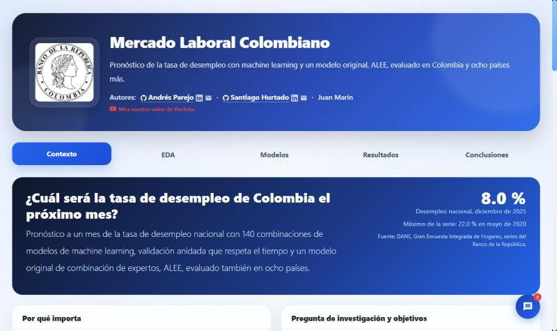
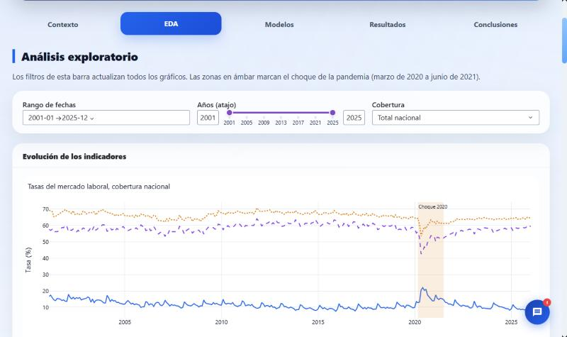
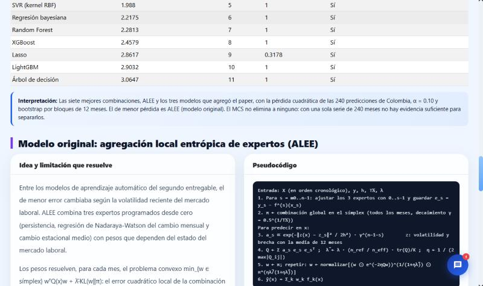
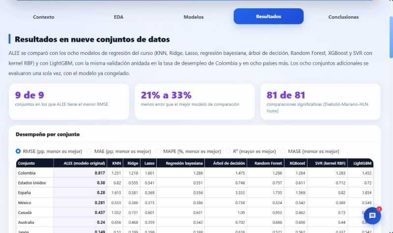
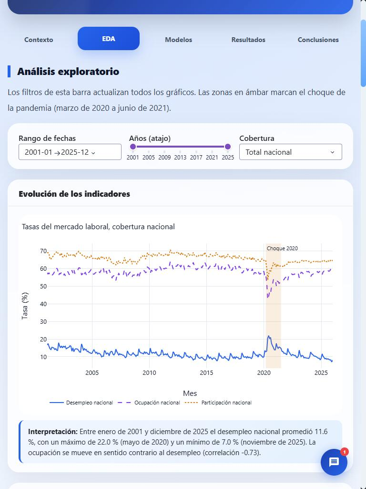

Dashboard y despliegue#
El dashboard lleva los resultados del proyecto a una aplicación web que cualquier persona puede usar sin instalar nada. Se construyó con Dash y dash-bootstrap-components, con cinco páginas (use_pages=True): Contexto, EDA, Modelos, Resultados y Conclusiones. Conserva el diseño del dashboard del primer entregable (MLC_VIZ_DASH): el video de entrada con el logo, el encabezado con los autores, las pestañas y un asistente conversacional.
URL pública: pendiente del despliegue en Render. Para verlo localmente: python app.py (o iniciar_dashboard.bat en Windows) y abrir http://127.0.0.1:8050.
Arquitectura#
Ruta |
Contenido |
|---|---|
|
Crea la aplicación, el video de entrada, el encabezado y las pestañas, registra el asistente y expone |
|
Una página por sección ( |
|
Carga única de datos, artefactos y resultados ( |
|
Funciones que construyen las figuras, con una plantilla y una paleta comunes |
|
Valores de Shapley por permutaciones, intervalos conformes, ACF y PACF, sin dependencias pesadas |
|
Asistente: el servidor arma el contexto con los datos y los resultados del proyecto y consulta la API de Groq |
|
Estilos ( |
|
Precalcula las predicciones fuera de muestra, el MCS, Friedman, los intervalos y los valores de Shapley globales |
|
Modelos serializados con |
El dashboard nunca entrena modelos ni corre búsquedas de hiperparámetros: solo carga artefactos y archivos precalculados.
Secciones#


Fig. 1 Contexto: el problema, la cifra más reciente con su fuente, la pregunta de investigación, las definiciones de los indicadores, los datos con su diccionario, la metodología y las limitaciones.#


Fig. 2 EDA: los filtros de fechas, años y cobertura actualizan todos los gráficos, y cada uno lleva una frase de interpretación calculada con los datos filtrados.#


Fig. 3 Modelos: la tabla de líderes, el diagnóstico y la interpretabilidad de cada modelo, la comparación estadística y la sección del modelo original.#


Fig. 4 Resultados: el desempeño de ALEE frente a los modelos del curso y LightGBM en los nueve conjuntos, con las pruebas de significancia.#
Lo que contiene cada página:
Modelos.
La tabla de líderes con la mejor combinación de cada modelo del segundo entregable, ALEE y los modelos que agregó el paper.
El diagnóstico del modelo elegido. En regresión: observado frente a pronosticado, residuos, histograma y ACF. En clasificación: matriz de confusión, curvas ROC y de precisión y exhaustividad, y diagrama de calibración.
La importancia global con valores de Shapley, el Model Confidence Set y el diagrama de diferencia crítica.
La sección de ALEE: idea, pseudocódigo, curva de convergencia, ablación en Colombia, costo computacional y ficha del modelo.
Resultados.
La tabla de las cinco métricas en los nueve conjuntos y un mapa del error relativo a ALEE.
Las pruebas de Diebold-Mariano-HLN, Giacomini-White y la prueba bayesiana con ROPE por conjunto; el diagrama de diferencia crítica y las pruebas de Wilcoxon y Conover entre conjuntos.
La ablación y el error por régimen de volatilidad de cada conjunto.
Conclusiones. Los hallazgos sobre los datos y los modelos, las limitaciones y la bibliografía del paper.
Decisiones de diseño#
Valores de Shapley propios.
shapy sus dependencias (numba,llvmlite) son pesados para los 512 MB del plan gratuito de Render.src/explain.pyestima los valores por muestreo de permutaciones [vStrumbeljK14]. Sirve para cualquier modelo, incluido ALEE, y cumple de forma exacta la propiedad de eficiencia. Una prueba (tests/test_dashboard.py) comprueba que en un modelo lineal da el valor exacto.Asistente. El contexto que recibe el modelo de lenguaje se arma con los datos y las tablas del proyecto, de modo que sus cifras coinciden con las del dashboard. Las instrucciones le prohíben inventar cifras y responder temas ajenos al proyecto. Necesita la variable de entorno
GROQ_API_KEY; sin ella responde con un aviso y el resto de la aplicación funciona igual.Paleta y accesibilidad. Cinco colores, y el color nunca es la única señal: las series también se distinguen por tipo de línea o de marcador, y las barras con diferencias significativas llevan rayas. Todos los gráficos tienen título, ejes con unidades y texto en el hover, y las imágenes tienen texto alternativo.
Rendimiento. Los datos y los modelos se cargan una sola vez al iniciar el servidor. El video de entrada solo se reproduce al abrir la aplicación: cambiar de pestaña no recarga la página.
Diseño adaptable. Las páginas usan la rejilla de Bootstrap (
dbc.Rowydbc.Col) y se revisaron en escritorio y en tableta.


Fig. 5 La página de EDA en una tableta de 768 píxeles de ancho.#
Ficha del modelo#
Detalles del modelo#
Autores: Andrés Parejo, Santiago Hurtado y Juan Marín (Pregrado en Ciencia de Datos, curso de Machine Learning, Universidad del Norte).
Tipo: combinación de tres expertos de pronóstico programados en NumPy: persistencia, regresión de Nadaraya-Watson del cambio mensual y cambio estacional medio. Los pesos dependen del estado del mercado laboral (volatilidad de los últimos tres meses y brecha frente a la media de doce meses) y se obtienen resolviendo un problema convexo en el símplex, regularizado con divergencia de Kullback-Leibler hacia una combinación global, con más fuerza cuando hay pocos meses parecidos en la historia.
Implementación:
src/original_model.py, claseModeloOriginal, compatible con scikit-learn. El artefacto del dashboard esartifacts/reg_ALEE/model.joblib.Hiperparámetros: ancho de banda del núcleo (
bandwidth), vida media del decaimiento temporal (half_life) y fuerza de la regularización (lam), elegidos con optimización bayesiana de 40 evaluaciones en una validación interna de ventana expansiva.Garantías: solución única (P1), descenso monótono del algoritmo (P2), error nunca mayor que el del peor experto (P3) y casos límite conocidos (P4). Se comprueban en
tests/test_original_model.py.Versión: la de tres expertos descrita en el paper. Las versiones anteriores y las demás iteraciones de diseño están registradas en
docs/registro_desarrollo.mdyexperiments/protocolo.md.
Uso previsto#
Pronóstico académico a un mes de la tasa de desempleo nacional de Colombia, con la información disponible al cierre del mes actual.
Comparación de reglas de combinación de pronósticos en un curso de machine learning.
Usos no recomendados#
Decisiones de política económica, laboral o financiera sin el criterio de expertos y sin las cifras oficiales del DANE.
Pronósticos a más de un mes: el modelo solo se entrenó y evaluó a un paso.
Otras series sin repetir la validación: los hiperparámetros dependen de los datos.
Datos#
Colombia: 288 meses (objetivos de enero de 2002 a diciembre de 2025) con 17 variables construidas solo con información pasada. Ver
DATA_STATEMENT.md.Conjuntos adicionales: Estados Unidos (FRED), España (Eurostat), México, Canadá, Australia, Japón, Alemania y Corea del Sur (OCDE), con 14 variables nacionales, porque no tienen indicadores de área. Se evaluaron una sola vez, con el modelo ya congelado.
Validación: anidada con
TimeSeriesSplit(5 pliegues externos y 3 internos, un mes de separación) y semilla 42.
Métricas#
RMSE medio de los cinco pliegues externos frente al mejor de los ocho modelos de regresión del curso (KNN, Ridge, Lasso, regresión bayesiana, árbol de decisión, Random Forest, XGBoost y SVR con kernel RBF) y LightGBM en cada conjunto. Tabla completa, con MAE, MAPE, R² y MASE, en el paper y en artifacts/resultados/solo_curso/.
Conjunto |
ALEE |
Mejor modelo de comparación |
Reducción del error |
|---|---|---|---|
Colombia |
0.817 |
Ridge (1.219) |
33% |
Estados Unidos |
0.380 |
Lasso (0.541) |
30% |
España |
0.280 |
Lasso (0.369) |
24% |
México |
0.281 |
SVR (kernel RBF) (0.369) |
24% |
Canadá |
0.437 |
Lasso (0.601) |
27% |
Australia |
0.240 |
Regresión bayesiana (0.342) |
30% |
Japón |
0.149 |
Regresión bayesiana (0.188) |
21% |
Alemania |
0.226 |
Regresión bayesiana (0.288) |
22% |
Corea del Sur |
0.325 |
Regresión bayesiana (0.438) |
26% |
Pruebas por conjunto: Diebold-Mariano-HLN y Giacomini-White con corrección de Holm rechazan la igualdad en las 81 comparaciones (nueve modelos por nueve conjuntos).
Entre conjuntos: Friedman con Iman-Davenport rechaza la igualdad de los diez modelos; el Wilcoxon con Holm da p = 0.035 frente a cada modelo.
Intervalo de predicción al 90 % (predicción conforme sobre los 240 errores fuera de muestra de Colombia): semiancho de 1.18 pp; cobertura medida hacia adelante de 93.8% en 192 meses, con un ancho medio de 2.55 pp.
Ablación#
La mayor parte de la ventaja viene de los expertos. La combinación aprendida supera al promedio simple en siete de los nueve conjuntos; la localización por estado solo aporta de forma significativa en México y Japón, y la regularización adaptativa en Canadá y Japón.
Limitaciones y riesgos#
Nueve conjuntos dan una potencia moderada a las pruebas entre conjuntos.
En Colombia se evaluaron diez iteraciones de diseño sobre los mismos 240 meses, lo que puede volver optimista el resultado en ese conjunto. Los ocho conjuntos adicionales, evaluados una sola vez con el modelo congelado, son la evidencia más confiable.
El error se concentra en el choque de 2020: con pocos meses parecidos en la historia, la localización tiene poca información y el modelo se acerca a los pesos globales.
Los datos son la versión vigente de las series y no la publicada en tiempo real cada mes.
El modelo supone que las filas están en orden cronológico y que cada fila solo contiene información anterior al mes que se pronostica.
Consideraciones éticas#
La tasa de desempleo resume la situación de millones de personas: un error de pronóstico puede retrasar o adelantar respuestas de política. El modelo debe presentarse siempre con su incertidumbre.
No usa datos individuales ni información personal.
Guía de despliegue en Render#
Verificar localmente:
python app.py, y queapp.serverestá expuesto.Subir el repositorio a GitHub.
requirements-dash.txtfija versiones exactas e incluyegunicorn. Para ahorrar memoria usaxgboost-cpu, que evita las librerías de NVIDIA.En Render, crear un Blueprint o un Web Service desde el repositorio.
render.yamldefine la construcción (pip install -r requirements-dash.txt), el arranque (gunicorn app:server --workers 1 --threads 4), la ruta de salud (/health) y Python 3.11.9.Escribir la clave
GROQ_API_KEYen las variables de entorno del servicio, en el panel de Render.Revisar los registros de construcción y comprobar las cinco páginas y sus callbacks en la URL pública.
GitHub Actions (
.github/workflows/tests.yml) corre todas las pruebas con la misma versión de Python que Render en cada push. Así se verifica que los artefactos, creados en Windows con Python 3.9, cargan en Linux.
El plan gratuito suspende el servicio cuando no tiene actividad: conviene abrir la URL unos minutos antes de la sustentación.